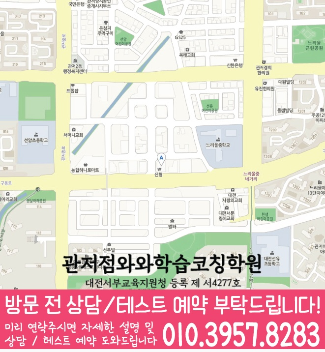

문제 수만 늘리기보다 문법 이해도, 독해 흐름, 빈출 오답 유형을 확인해 고2 영어에 맞는 학습 순서를 설계합니다.


LOCAL ACADEMY GUIDE
대전 서구 원내동 고2 영어학원: 와와학습코칭센터 영어 학습 안내
대전광역시 서구 원내동에서 고2 영어학원을 찾고 있다면, 와와학습코칭센터 관저점이 ‘현재 성적-약점-학습 습관’을 먼저 진단해 영어의 빈틈을 체계적으로 채웁니다. 문법 개념 정리부터 독해·문장 구조 훈련, 내신/수능형 문제풀이, 오답 분석과 재학습까지 이어지는 학습 흐름을 통해 고2 영어를 안정적으로 끌어올립니다.
원내동 고2 영어학습의 핵심 포인트
고2 영어에서 자주 흔들리는 문장 해석, 구문/동사 구조, 어휘-문맥 연결을 통합 관리해 실전 점수로 이어지게 합니다.
선생님 특징
왜 틀리는지(개념 부족/독해 습관/실수)를 짚고, 같은 실수가 반복되지 않도록 풀이 과정과 근거를 함께 잡아줍니다.
틀린 문제를 단순 재풀이하지 않고, 오답 원인-정답 근거-다음 연습 포인트를 정리해 다음 시험에 바로 반영합니다.
수업 진행방식
1. 현재 수준 확인
고2 학년 진도, 학교 수행·내신 흐름, 최근 시험에서 약한 단원과 자주 틀리는 문장 유형을 점검합니다.
2. 문법 개념 정리와 독해 훈련
단순 암기가 아닌 구문/문장 구조를 먼저 잡은 뒤, 단락 이해와 문장 해석을 단계적으로 확장해 독해 정확도를 높입니다.
3. 문제풀이·오답 피드백
내신형·수능형 문제를 병행하며 풀이 근거를 훈련하고, 오답은 유형별로 분류해 재도전 로드맵을 제공합니다.
고등(고2) 영어학습 전략
내신 대비
- 학교별 시험 범위에 맞춰 문법·독해 출제 포인트를 우선순위로 학습합니다.
- 서술형/교과서 연계 유형에서 감점 나는 이유를 잡아 정답 근거를 반복 훈련합니다.
문법(구문) 완성
- 고2에서 자주 흔들리는 수일치, 시제, 관계사/부사절 등 핵심 구문을 단계적으로 정리합니다.
- 문법을 독해에 바로 적용해 해석 정확도와 속도를 함께 끌어올립니다.
독해 정확도↑
- 문단 중심 핵심 문장 찾기, 지시어/접속사 관계 파악 등 독해 전략을 훈련합니다.
- 어휘를 ‘뜻’만 외우지 않고 문맥에서 의미를 확정하는 방식으로 연습합니다.
오답 패턴 관리
- 실수형(읽기 오류)·개념형(구문 미이해)·추론형(근거 부족)으로 오답을 분류합니다.
- 다음 시험 전까지 같은 유형이 반복되지 않도록 복습 루틴을 설계합니다.
대전 서구 원내동 고2 영어학원을 찾는 학생이라면, 와와학습코칭센터 관저점에서 현재 실력 진단을 바탕으로 문법·독해·오답 관리까지 한 흐름으로 완성해 보세요. 상담을 통해 원내동(대전 서구) 학생의 학교 진도와 목표에 맞춘 영어 학습 방향을 자세히 안내드립니다.
센터 위치 안내
주소
대전 서구 구봉로 133 1542번지 205호
오시는 길
~ 와와학습코칭센터 관저점 위치는 (대전 서구 구봉로 133 1542번지 205호)입니다. 마치광장 신협건물 2층
주요 타깃학교(이외 학교도 수업 가능)
초등 타깃학교
정보 준비중
중등 타깃학교
정보 준비중
고등 타깃학교
서일고
서일여고
과목별 수강 가능 학년
국어
초1
초2
초3
초4
초5
초6
중1
중2
중3
고1
영어
초1
초2
초3
초4
초5
초6
중1
중2
중3
고1
고2
고3
수학
초1
초2
초3
초4
초5
초6
중1
중2
중3
고1
고2
고3
과학
초1
초2
초3
초4
초5
초6
중1
중2
중3
사회
초1
초2
초3
초4
초5
초6
중1
중2
중3
학원 등록 정보
수업료는 어떻게 되나요? ✨
A - 서울 (1회 90-100분 수업기준)
| 횟수 | 초등 | 중등 | 고등 |
|---|---|---|---|
| 주 3회 | 249,000 | 266,000 | 299,000 |
| 주 4회 | 319,000 | 341,000 | 384,000 |
| 주 5회 | 389,000 | 416,000 | 469,000 |
B - 서울 외 지점 (1회 90-100분 수업기준)
| 횟수 | 초등 | 중등 | 고등 |
|---|---|---|---|
| 주 3회 | 219,000 | 236,000 | 269,000 |
| 주 4회 | 279,000 | 301,000 | 344,000 |
| 주 5회 | 339,000 | 366,000 | 419,000 |
* 수업료는 지역 및 횟수에 따라 일부 차이가 있을 수 있습니다.
고2 영어 상담부터 오답관리까지 이어지는 흐름
고2 영어는 내신 지문 관리, 문법 적용, 독해 속도, 어휘 누적이 함께 필요한 시기입니다. 상담에서는 현재 점수보다 어떤 지점에서 해석과 근거 판단이 흔들리는지 먼저 확인합니다.
현재 수준 확인
학교 진도, 최근 영어 시험 결과, 어려운 지문, 문법 단원, 어휘 암기 습관을 확인합니다.
문법·독해 진단
문장 구조, 구문 해석, 지문 근거 찾기, 선택지 판단 과정을 나누어 약점을 점검합니다.
플래너 실행 점검
어휘 암기, 지문 복습, 문법 문제, 오답 재풀이를 주간 계획으로 나누고 실행 여부를 확인합니다.
오답 원인 분석
틀린 문제를 어휘 부족, 해석 오류, 문법 혼동, 근거 누락으로 분류해 다음 학습에 연결합니다.
HIGH SCHOOL ENGLISH FAQ
고2 영어학원 FAQ
Q고2 영어는 어떤 부분부터 점검하나요?
학생의 학교 진도와 최근 시험 결과를 바탕으로 문법 개념, 독해 속도, 어휘 누적, 지문 근거 찾기 습관을 먼저 확인합니다.
Q내신 영어와 모의고사 대비를 함께 할 수 있나요?
가능합니다. 학교 시험 범위와 교과서 지문을 우선 관리하면서, 모의고사식 독해 유형과 어휘·구문 학습을 함께 연결합니다.
Q고2 영어 오답 관리는 어떻게 진행되나요?
틀린 문제를 어휘 부족, 구문 해석 오류, 문법 개념 혼동, 근거 문장 누락으로 나누고 다음 복습 계획에 반영합니다.
Q상담 전에 무엇을 준비하면 좋나요?
최근 영어 시험지, 학교 시험 범위, 어려웠던 지문이나 문법 단원, 어휘 암기 습관, 모의고사 성적을 준비하면 더 구체적인 상담이 가능합니다.
REAL PARENT REVIEWS
수강생 학부모 후기
원내동 고2 영어학원 정보를 확인하신 학부모님들이 참고할 수 있는 실제 학습 후기입니다.
학생들이 안전하게 다닐 수 있도록 관리해 주십니다.
아이의 실력에 맞춰 수업을 진행해 주셔서 학습 효과가 높았습니다.
단기간의 점수보다 올바른 공부 방법을 알려주셔서 좋았습니다.
수업과 상담 모두 세심하게 진행되어 만족하고 있습니다.
학부모가 놓치기 쉬운 부분까지 세심하게 안내해 주셨습니다.
학습 결과가 좋지 않을 때 원인을 함께 찾아주셔서 도움이 되었습니다.
STUDY GUIDE
원내동 고2 영어 학원 학습관리 포인트
원내동 고2 영어 학원을 찾는 학생이라면 고2 과정에서 필요한 영어 학습 목표를 먼저 정리하는 것이 좋습니다. 현재 학교 진도와 최근 시험 결과, 숙제 수행 습관을 함께 보면 상담 방향이 훨씬 구체적입니다.
시험 직전에 한꺼번에 외우기보다 지문별 핵심 어휘와 표현을 주간 단위로 누적 관리합니다.
감으로 해석하지 않고 주어·동사·수식어 구조를 표시해 독해 근거를 남기는 습관을 만듭니다.
본문 암기에서 끝내지 않고 빈칸, 순서, 어법, 서술형으로 바뀔 수 있는 문장을 따로 정리합니다.
대전 서구 원내동 상담 전 체크
최근 시험지, 학교 진도, 어려운 단원, 숙제 수행 정도를 함께 정리해두면 상담에서 학생에게 필요한 학습 순서를 더 빠르게 잡을 수 있습니다.
함께 보면 좋은 학습가이드
현재 페이지의 학년·과목과 연결되는 정보성 콘텐츠입니다. 지역 페이지와 함께 읽으면 상담 준비와 학습 계획을 더 구체화할 수 있습니다.
원내동 관련 학원 페이지
현재 보고 있는 지역 안에서 센터 안내와 학년·과목별 상세 페이지로 바로 이동할 수 있습니다.
원내동 고2 영어학원 상담이 필요하신가요?
고2 영어의 현재 문법 이해도, 독해 속도, 어휘 습관, 내신 대비 계획을 정리해 상담문의로 남겨주시면 학습 방향을 더 구체적으로 확인할 수 있습니다.
상담문의